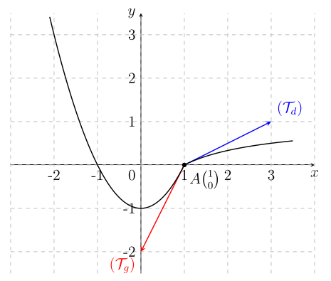

INTRODUCTION
La courbe ci-dessous représente une fonction \( f : x \mapsto f(x) \).
Considérons la fonction \( f \) représentée ci-dessus et posons-nous les questions suivantes :
- Que devient \( f(x) \) lorsque la variable \( x \) s'éloigne vers \( +\infty \) ?
- Que devient \( f(x) \) lorsque la variable \( x \) se rapproche de \( 0 \) ?
C'est en essayant de répondre à ce type de question que la notion de limite a été définie.
Ainsi, si on observe la courbe de \( f \), on voit que lorsque \( x \) s'éloigne vers \( +\infty \), \( f(x) \) se rapproche de \( 0 \) ;
on dit que la limite lorsque \( x \) tend vers \( +\infty \) de \( f \) est égale à \( 0 \).
De même, si on observe la courbe, on voit que lorsque \( x \) se rapproche de \( 0 \) tout en restant à droite de \( 0 \), \( f(x) \) tend vers \( +\infty \) ;
on dit que la limite à droite de \( 0 \) de \( f \) est égale à \( +\infty \).
I. Fonction dérivable en un point
-
Définition du nombre dérivé
Soit $f$ une fonction numérique et $a$ un nombre réel tel que $f$ est définie sur un intervalle $I$ contenant $a$.
On dit que $f$ est dérivable en $a$ si :
$\lim\limits_{x\to a}\frac{f(x)-f(a)}{x-a}=\ell\in\mathbb{R}$
$\ell$ est appelé nombre dérivé de $f$ en $a$ que l'on note $f'(a)=\ell$.
Exemple
Les fonctions suivantes sont-elles dérivables aux points indiqués ?
$f(x)=x^2 \quad \text{en } a=-1 \qquad\qquad g(x)=2x^3-1 \quad \text{en } a=2$
Contre exemple :
$f(x)=|x-1|$ et $f(1)=0$.
$f$ est-elle dérivable en $1$ ?
-
Théorème
Si une fonction $f$ est dérivable en un réel $a$, alors $f$ est continue en $a$.
C'est-à-dire que la dérivabilité entraîne la continuité.
NB :La réciproque n'est pas toujours vraie.
- Soit $g(x)=\frac{f(x)-f(1)}{x-1}$ avec $f(x)=|x-1|$. $g$ est-elle continue en $1$ ?
- Soit $f(x)=|x|$. $f$ est-elle dérivable en $0$ ?
Propriété
-
Interprétation graphique
Soit $f$ une fonction numérique dérivable en un réel $a$.
La courbe représentative de la fonction $f$ admet une tangente d'équation :
$(T):\quad y=f'(a)(x-a)+f(a) \quad \text{au point } A(a;f(a))$
Le coefficient directeur de $(T)$ est $f'(a)$.
Exemples :
- $f(x)=x^2-3x-1,\qquad x_0=-2$
- $f(x)=\dfrac{2-3x}{x-2},\qquad x_0=0$
- $f(x)=\sqrt{2x-3},\qquad x_0=2$
-
Dérivée à gauche et dérivée à droite
Soit $f$ et $a$ un nombre réel :
- Si \( \lim\limits_{x\to a^-}\frac{f(x)-f(a)}{x-a} =\ell\in\mathbb{R} \) alors on dit que $f$ est dérivable à gauche de $a$ et le réel $\ell$ est appelé nombre dérivé de $f$ à gauche de $a$ que l'on note $f'_g(a)=\ell$.
- Si \( \lim\limits_{x\to a^+}\frac{f(x)-f(a)}{x-a} =\ell'\in\mathbb{R} \) alors on dit que $f$ est dérivable à droite de $a$ et que $\ell'$ est le nombre dérivé de $f$ à droite de $a$ que l'on note $f'_d(a)=\ell'$.
Théorème :
- Si $f'_g(a)=f'_d(a)$ alors $f$ est dérivable en $a$.
- Si $f'_g(a)\neq f'_d(a)$ alors $f$ n'est pas dérivable en $a$.
- Si \( \lim\limits_{x\to a}\frac{f(x)-f(a)}{x-a}=\infty \) alors $f$ n'est pas dérivable en $a$.
Exemple :
Soit $ f(x)= \begin{cases} x^2-1 & \text{si } x<1,\\[1mm] \dfrac{x-1}{x+1} & \text{si } x\geq 1. \end{cases} \quad \text{. Étudier la dérivabilité de } f \text{ en } 1. $
Interprétation graphique
- Si $f$ est dérivable à gauche de $a$ alors $\mathcal{C}_f$ admet une demi-tangente à gauche de $a$ d'équation $(T_g):\ y=f'_g(a)(x-a)+f(a)$ au point $A(a;f(a))$.
- Si $f$ est dérivable à droite de $a$ alors $\mathcal{C}_f$ admet une demi-tangente à droite de $a$ d'équation $(T_d):\ y=f'_d(a)(x-a)+f(a)$ au point $A(a;f(a))$.
Exemple :
Soit $ f(x)= \begin{cases} x^2-1 & \text{si } x<1,\\[1mm] \dfrac{x-1}{x+1} & \text{si } x\geq 1. \end{cases} \quad \text{. Étudier la dérivabilité de } f \text{ en } 1 \text{ puis interpréter graphiquement les résultats.} $Solution :
Puisque $f'_g(1)\neq f'_d(1)$, alors $\mathcal{C}_f$ admet deux demi-tangentes d'équations respectives :
$ \begin{aligned} (T_g):\quad y &= f'_g(1)(x-1)+f(1) &&\Longrightarrow& (T_g):\quad y &= 2x-2 \\[2mm] (T_d):\quad y &= f'_d(1)(x-1)+f(1) &&\Longrightarrow& (T_d):\quad y &= \frac{1}{2}x-\frac{1}{2} \end{aligned} $
Tableaux de valeurs pour tracer les demi-tangentes :
$ \begin{array}{c@{\qquad\qquad}c} (T_g):\ y=2x-2 & (T_d):\ y=\dfrac{1}{2}x-\dfrac{1}{2} \\[2mm] \begin{array}{|c|c|c|} \hline x & 0 & 1\\ \hline y & -2 & 0\\ \hline \end{array} & \begin{array}{|c|c|c|} \hline x & 0 & 1\\ \hline y & -\dfrac{1}{2} & 0\\ \hline \end{array} \end{array} $Tableaux de valeurs pour les courbes :
$ \begin{array}{c@{\qquad\qquad}c} \begin{array}{c} x^2-1 \\[1mm] \begin{array}{|c|c|c|c|c|} \hline x & -2 & -1 & 0 & 1\\ \hline f(x) & 3 & 0 & -1 & 0\\ \hline \end{array} \end{array} & \begin{array}{c} \dfrac{x-1}{x+1} \\[1mm] \begin{array}{|c|c|c|c|c|} \hline x & 0 & 1 & 2 & 3\\ \hline f(x) & -1 & 0 & \dfrac{1}{3} & \dfrac{1}{2}\\ \hline \end{array} \end{array} \end{array} $

Illustration graphique
$\begin{aligned} \text{---}\quad &\lim_{x\to a^\pm}\frac{f(x)-f(a)}{x-a} =\pm\infty \quad \text{alors } \mathcal{C}_f \text{ admet une demi-tangente verticale}\\ &\hspace{1.2cm}\text{dirigée vers le haut.} \\[1mm] \text{---}\quad &\lim_{x\to a^\pm}\frac{f(x)-f(a)}{x-a} =+\infty \quad \text{alors } \mathcal{C}_f \text{ admet une demi-tangente verticale}\\ &\hspace{1.2cm}\text{dirigée vers le bas.} \end{aligned}$
Resumé
\(\displaystyle \lim_{x \to x_0} \frac{f(x)-f(x_0)}{x-x_0}\)-
\(a \in \mathbb{R}^*\)(\(\mathcal{C}_f\)) admet une tangente au point
\((x_0; f(x_0))\) de coefficient directeur \(a\) -
\(0\)(\(\mathcal{C}_f\)) admet une tangente ho-
rizontale au point \((x_0; f(x_0))\)
\(\displaystyle \lim_{x \to x_0^+} \frac{f(x)-f(x_0)}{x-x_0}\)-
\(a \in \mathbb{R}^*\)(\(\mathcal{C}_f\)) admet une demi-tangente
à droite au point \((x_0; f(x_0))\)
de coefficient directeur \(a\) -
\(0\)(\(\mathcal{C}_f\)) admet une demi-tangente hori-
zontale à droite au point \((x_0; f(x_0))\) -
\(+\infty\)(\(\mathcal{C}_f\)) admet une demi-tangente
verticale à droite au point
\((x_0; f(x_0))\) dirigée vers le haut -
\(-\infty\)(\(\mathcal{C}_f\)) admet une demi-tangente
verticale à droite au point
\((x_0; f(x_0))\) dirigée vers le bas
\(\displaystyle \lim_{x \to x_0^-} \frac{f(x)-f(x_0)}{x-x_0}\)-
\(a \in \mathbb{R}^*\)(\(\mathcal{C}_f\)) admet une demi-tangente
à gauche au point \((x_0; f(x_0))\)
de coefficient directeur \(a\) -
\(0\)(\(\mathcal{C}_f\)) admet une demi-tangente hori-
zontale à gauche au point \((x_0; f(x_0))\) -
\(+\infty\)(\(\mathcal{C}_f\)) admet une demi-tangente
verticale à gauche au point
\((x_0; f(x_0))\) dirigée vers le bas -
\(-\infty\)(\(\mathcal{C}_f\)) admet une demi-tangente
verticale à gauche au point
\((x_0; f(x_0))\) dirigée vers le haut.
II. Fonction dérivée
-
Dérivé sur un intervalle
Soit $f$ une fonction numérique et $I$ un intervalle $I=]a,b[$ tel que $f$ y est définie.
On dit que $f$ est dérivable sur $I$ si $f$ est dérivable en chaque point appartenant à $I$.
Si $f$ est définie sur un intervalle $J=[a,b]$ alors on dit que $f$ est dérivable sur $J$ si $f$ est dérivable en chaque point appartenant à $J$ et de plus $f$ dérivable à gauche de $b$ et à droite de $a$.
Si $f$ est dérivable sur un intervalle $I$ alors la fonction définie sur $I$ par $f'$ qui à tout réel $x\in I$ associe $f'(x)$ le nombre dérivé de $f$ en $x$. On dit que $f'$ est la dérivée (dérivée) de $f$ en $x$.
-
Dérivée des fonctions usuelles
Le tableau ci-dessous nous donne la dérivée de fonctions usuelles.
Foncto définie par \(f\) Foncto dérivée \(f'(x)\) Ensemble de dérivabilité \(f(x)=k \quad (k\in\mathbb{R})\) \(f'(x)=0\) \(\mathbb{R}\) \(f(x)=ax+b\) \(f'(x)=a\) \(\mathbb{R}\) \(f(x)=x^n \quad (n\in\mathbb{N})\) \(f'(x)=nx^{n-1}\) \(\mathbb{R}\) \(f(x)=\dfrac{1}{x}\) \(f'(x)=-\dfrac{1}{x^2}\) \(\mathbb{R}^*\) \(f(x)=\sqrt{x}\) \(f'(x)=\dfrac{1}{2\sqrt{x}}\) \(\mathbb{R}_+^*\) \(f(x)=\cos x\) \(f'(x)=-\sin x\) \(\mathbb{R}\) \(f(x)=\sin x\) \(f'(x)=\cos x\) \(\mathbb{R}\) Exemple
- $f(x)=\sqrt{2} \quad\Longrightarrow\quad f'(x)=0$
- $f(x)=2x+3 \quad\Longrightarrow\quad f'(x)=2$
- $f(x)=x^3 \quad\Longrightarrow\quad f'(x)=3x^2$
- $f(x)=\dfrac{3}{4}x^5+x^2 \quad\Longrightarrow\quad f'(x)=\dfrac{3}{4}\times5x^4+2x =\dfrac{15}{4}x^4+2x$
- $f(x)=-5x \quad\Longrightarrow\quad f'(x)=-5$
- $f(x)=-5x^4+9 \quad\Longrightarrow\quad f'(x)=-20x^3$
Remarque :
Les fonctions numériques sont dérivables sur l'ouvert de leur ensemble de définition.
Exemple :
$ \begin{aligned} f(x)&=\sqrt{x} &\quad\Longrightarrow\quad& f\text{ existe ssi }x\geq0 &\quad\Longrightarrow\quad& D_f=[0,+\infty[ \\[2mm] f(x)&=\sqrt{x} &\quad\Longrightarrow\quad& f'(x)=\dfrac{1}{2\sqrt{x}} &\quad& f'\text{ existe ssi }x>0 &\quad\Longrightarrow\quad& \boxed{D_{f'}=]0,+\infty[} \end{aligned} $ -
Opérations sur les dérivées
Soit $u$ et $v$ deux fonctions numériques dérivables sur un intervalle $I$. Pour obtenir la dérivée de la somme, du produit, du quotient et de la composée, on se réfère au tableau suivant :
1 2 3 4 5 \(f\) définie par \(k u \ (k \in \mathbb{R}^*)\) \(u + v\) \(u \cdot v\) \(\dfrac{u}{v}\) \(\dfrac{1}{v}\) dérivée de \(f\) \(k u'\) \(u' + v'\) \(u' v + v' u\) \(\dfrac{u' v - v' u}{v^2}\) \(-\dfrac{v'}{v^2}\) 6 7 8 9 10 \(\sqrt{u}\) \(u^n\) \(u \circ v\) \(\cos(u)\) \(\sin(u)\) \(\dfrac{u'}{2\sqrt{u}}\) \(n u' u^{n-1}\) \(v' \times u' \circ v\) \(-u' \sin(u)\) \(u' \cos(u)\) - $f(x)=2(x^2-3x+1) \quad\Longrightarrow\quad f'(x)=2(2x-3)$
- $f(x)=(4x^2+5x)+(7x-9) \quad\Longrightarrow\quad f'(x)=(8x+5)+7=8x+12$
- $f(x)=(3x-5)(x^2-1) \quad\Longrightarrow\quad \begin{aligned}[t] f'(x) &=3(x^2-1)+2x(3x-5)\\ &=3x^2-3+6x^2-10x\\ &=9x^2-10x-3 \end{aligned}$
- $f(x)=\dfrac{2x^2-1}{x+1} \quad\Longrightarrow\quad f'(x)= \dfrac{4x(x+1)-1(2x^2-1)}{(x+1)^2} =\dfrac{2x^2+4x+1}{(x+1)^2}$
- $f(x)=\dfrac{1}{2x-3} \quad\Longrightarrow\quad f'(x)=-\dfrac{2}{(2x-3)^2}$
- $f(x)=\sqrt{3x+1} \quad\Longrightarrow\quad f'(x)=\dfrac{3}{2\sqrt{3x+1}}$
- $f(x)=(x^2-1)^3 \quad\Longrightarrow\quad f'(x)=3(2x)(x^2-1)^2 =6x(x^2-1)^2$
-
$ f(x)=\sqrt{(x-1)^3} \quad\Longrightarrow\quad \begin{cases} u=\sqrt{x} \quad\Longrightarrow\quad u'=\dfrac{1}{2\sqrt{x}},\\[2mm] v=(x-1)^3 \quad\Longrightarrow\quad v'=3(x-1)^2. \end{cases}$
$f'(x)=3(x-1)^2\times \dfrac{1}{2\sqrt{(x-1)^3}}$
- $ \begin{aligned} f(x)&=\cos x \quad\Longrightarrow\quad f'(x)=-1\sin x=-(x)'\sin x \\[2mm] f(2x-3)&=\cos(2x-3) \quad\Longrightarrow\quad f'(2x-3)=-2\sin(2x-3) \end{aligned}$
- $ \begin{aligned} f(x)&=\sin x \quad\Longrightarrow\quad f'(x)=1\cos x=(x)'\cos x \\[2mm] f(3x^2-5x+4)&=\sin(3x^2-5x+4) \quad\Longrightarrow\quad f'(v)=(6x-5)\cos(3x^2-5x+4) \end{aligned}$